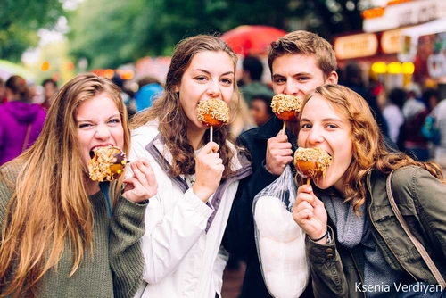
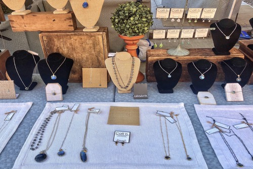

Student design project · Historical 2024 event guide · Not the official festival website
Activities
From hiking to going to a vineyard, Ithaca is full of activities that you and your family can explore during your visit. If you are staying a few days, or if you have some extra time after attending the Apple Harvest Festival, here are some things you can do in the Ithaca area.
Hiking
Taughannock Falls State Park, Buttermilk Falls State Park, and Treman State Park, are all full of waterfalls, gorges, and beautiful views that you can explore through winding trails. There are many trails, ranging in distances and difficulty. These parks are all within a 20-minute drive of the Ithaca Commons.
Cornell University has a beautiful campus bustling with students in the fall. The views from the slope are gorge-ous as the leaves change, and Beebe lake near north campus is a beautiful, short walk. The Cornell Botanical Gardens also feature beautiful flowers and foliage to stroll through.
Vineyard
If the cider and wine vendors at the festival weren't enough to immerse yourself in the Finger Lakes wine and cider scene, check out Six Mile Creek, a small winery only 10 minutes away from the Commons. With a tasting room and plenty of outdoor seating, the vineyard offers a taste of Ithaca wine, as well as beers and cheeses. Don't worry, if your party includes people under the age of 21, they sell non-alcoholic drinks too!

More Local Shopping
The Farmers Market is a staple of the Ithaca community. Similar to the Harvest Festival, many local vendors and creators come together to provide their creations to the Ithaca community. Many people come from the surrounding area to visit this market, and you can buy almost anything you want! The best part is they are open almost year round (except for those awfully cold winter months), so you can come back anytime to check it out.
Dining
Be sure to dine at some of Ithaca's most popular restaurants, like the Ithaca Beer Company, Asia Cuisine, Taste of Thai, Red's Place, Bickering Twins, Hawi, and many many more! Most of these restaurants can be found in the Commons, so they are perfect for dinner after attending the Harvest Festival!
